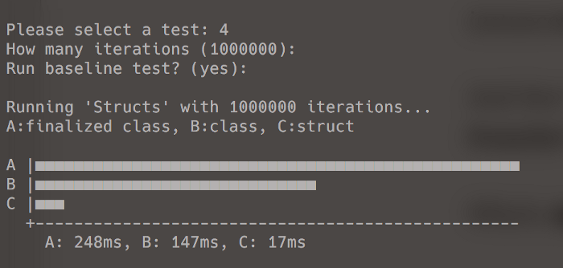

在内存当道的日子里，无论什么时候都要考虑这些代码是否会影响程序性能呢？
在现在的世界里，几乎不会去考虑用了几百毫秒，可是在特别的场景了，往往这几百毫米确影响了整个项目的快慢。
通过了解这两者之间的性能差异，希望帮助大家在合适的场景里选择正确的编码。
public class PointClass
{
public int X { get; set; }
public int Y { get; set; }
public PointClass(int x, int y)
{
X = x;
Y = y;
}
}
public class PointClassFinalized : PointClass
{
public PointClassFinalized(int x, int y) : base(x, y)
{
}
~PointClassFinalized()
{
// added a finalizer to slow down the GC
}
}
public struct PointStruct
{
public int X { get; set; }
public int Y { get; set; }
public PointStruct(int x, int y)
{
X = x;
Y = y;
}
}
public class StructsTest : PerformanceTest
{
protected override bool MeasureTestA()
{
// access array elements
var list = new PointClassFinalized[Iterations];
for (int i = 0; i < Iterations; i++)
{
list[i] = new PointClassFinalized(i, i);
}
return true;
}
protected override bool MeasureTestB()
{
// access array elements
var list = new PointClass[Iterations];
for (int i = 0; i < Iterations; i++)
{
list[i] = new PointClass(i, i);
}
return true;
}
protected override bool MeasureTestC()
{
// access array elements
var list = new PointStruct[Iterations];
for (int i = 0; i < Iterations; i++)
{
list[i] = new PointStruct(i, i);
}
return true;
}
}有一个PointClass和一个 PointStruct
，这两者用于存放X 和Y 两个变量，而且还有一个 PointClassFinalized。
方法 MeasureTestA 创建了100万个 PointClassFinalized 实例
方法 MeasureTestB 创建了100万个 PointClass 实例
方法 MeasureTestC 创建了100万个 PointStruct 实例
您认为哪种方法最快？

MeasureTestB 和 MeasureTestC 这两个方法的唯一不同在于一个是创建类 一个是创建结构。
MeasureTestC 仅在17毫秒内完成分配并运行，比 MeasureTestB 方法快8.6倍！
为什么会出现这样的事情，这里发生了什么？
不同的在于结构和类如何存储在内存中。
下面是 PointClass 实例 内存布局：
该列表是一个局部变量，存放在堆栈中。引用堆上的一组 PointClass实例
PointClass 是一个引用类型，存放在堆上。
该列表仅维护一个数组，指向存储在堆上 PointClass 实例。
观察到上图的黄色箭头，在堆上引用了很多实例。
数组是一组相同的对象，MeasureTestB 这个方法是将一组相同的对象存放在数组中。
当访问指定数组元素时，.NET运行时需要检索对象引用，然后“跟随”引用以获取PointClass实例。
当数组元素超出范围时，.NET垃圾收集器就会开始回收PointClass对象内存，在 MeasureTestA 方法中 的PointClassFinalized类 其实增加了额外时间。
.NET Framework在单个线程上运行所有终结器，线程必须在垃圾回收器可以回收内存之前依次处理1,000,000个对象。
可以看到MeasureTestA比MeasureTestB慢1.7倍。
我们来看看 PointStruct 的内存布局：
结构是值类型，所有 PointStruct 实例都存储在数组本身中。堆上只有一个对象。
初始化数组，.NET运行库可以将X和Y值直接写入数组里。无需在堆上创建新对象，也不需要引用它。
当访问指定数组元素时,.NET运行时可以直接检索结构。
当超出范围时，.NET垃圾回收器只需要处理单个对象。
我们总要使用结构吗？要分情况看：